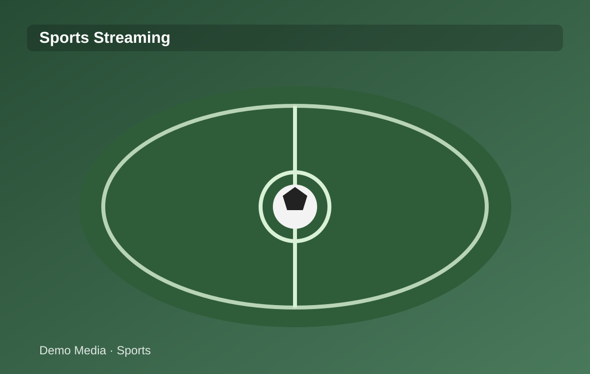
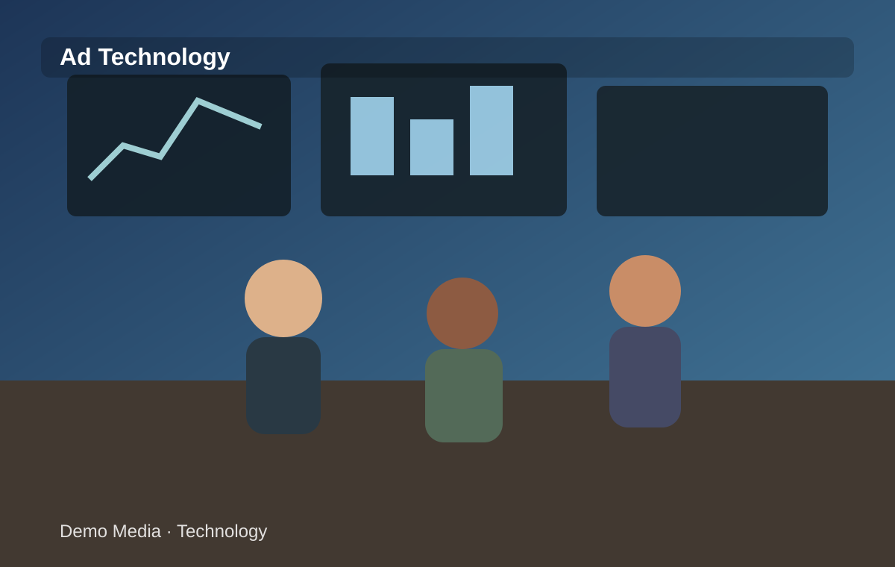
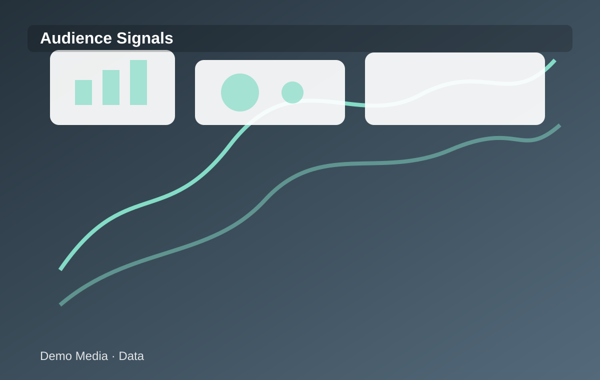

ESPORTES
Streaming muda a distribuição de conteúdo esportivo
Plataformas ampliam inventário e alcance.
Abrir matéria →Streaming, audiência e novas experiências digitais no esporte.

Plataformas ampliam inventário e alcance.
Abrir matéria →
Novos formatos acompanham a fragmentação da audiência.
Abrir matéria →
Audiência digital passa a ser analisada em mais detalhes.
Abrir matéria →Acordos comerciais combinam conteúdo e mídia.
Abrir matéria →